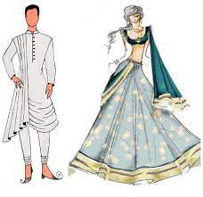

| Strengths | |
|---|---|
|
Self-Mangement |
“I can easily arrange my own tasks and priorities without anyone else telling me what to do and how. Of course, the input is always welcomed, but I’m not afraid to work alone. What is inevitable, is to provide reports so the rest of the team and my supervisors know what I’m working on and how high my efforts actually are.” |
|
Lateral Thinking |
“When I face a challenge, I always try to find a solution by thinking out-of-the-box and questioning the basic principles of the problem. I think, in order to stick out from the competitors, you always have to do things differently, and that’s only possible if you question everything and then come up with creative, disruptive solutions.” |
|
Intellectual Curiosity |
“I’m interested in many different things and fields, which allows me to examine a problem from many different angles. Is it a project about international expansion? Data, multiculturality, logistics, legal requirements… even if I am not an expert in every field, I love to get a 360º overview to fully understand, what are the main contributing factors and the pitfalls that might occur.” |
|
Patience |
“I’m a really patient person when it comes to dealing with people. I know that we are all different and have very distinctive characteristics with different views to approach things. During the onboarding period of a new colleague, for example, I have no problem with explaining something even 100 times, if it helps my colleague to do his/her work efficiently.” |
| Hobbies | ||
|---|---|---|
|
Art and Crafts | >
> |
Styling | >

|
 |
| Hobbies | |
|---|---|
| Location | Tanuku |